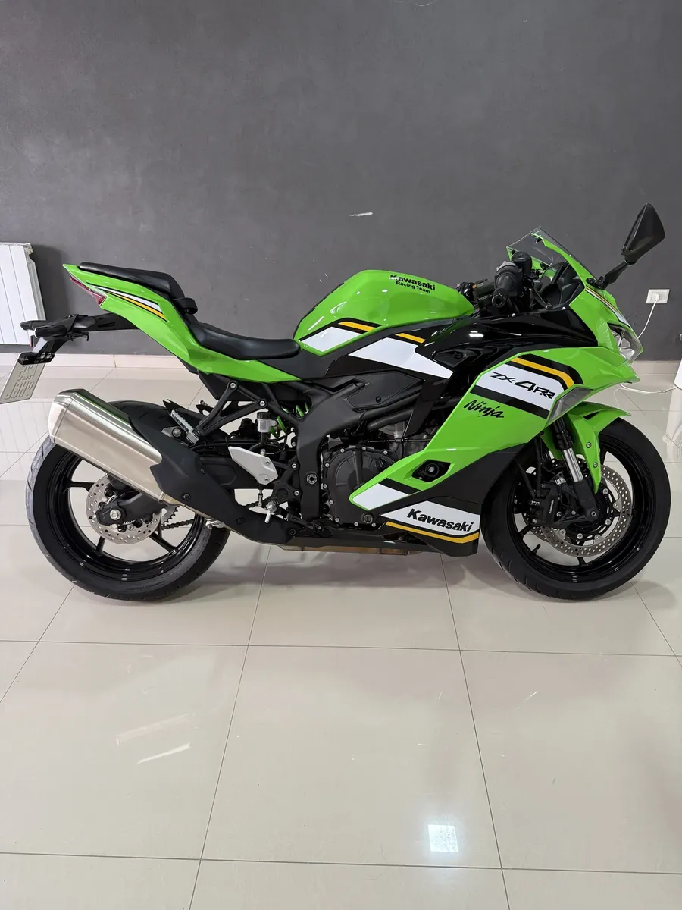
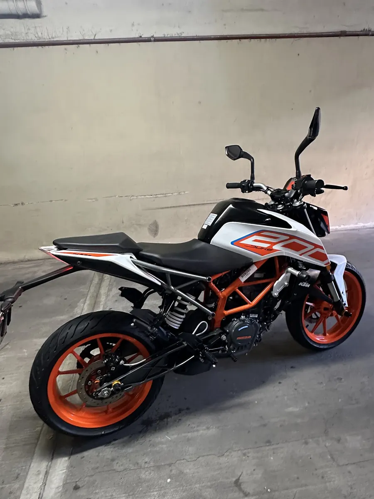
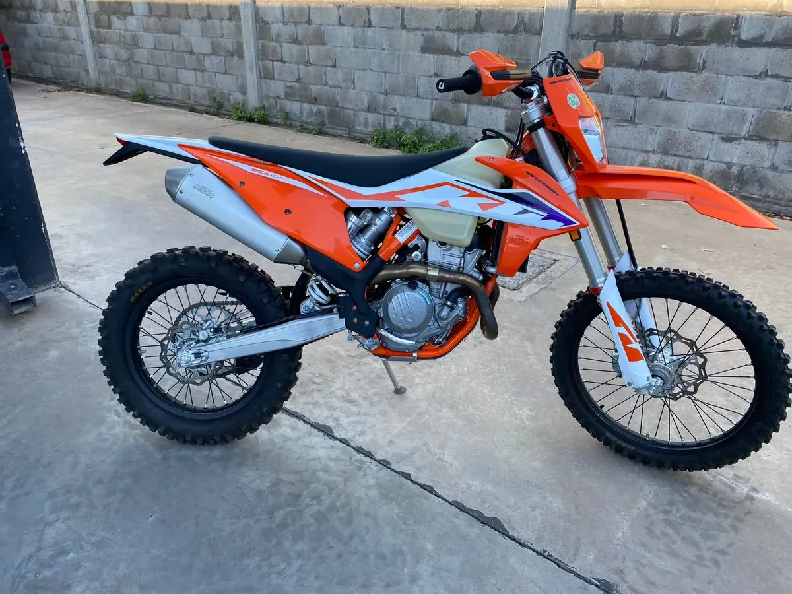
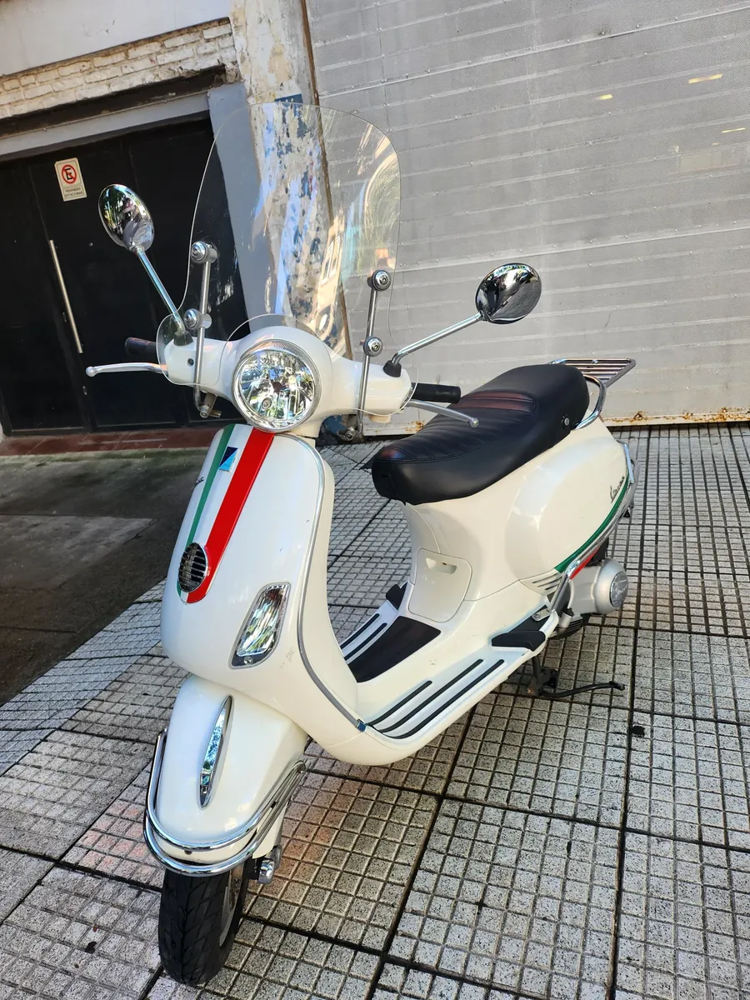
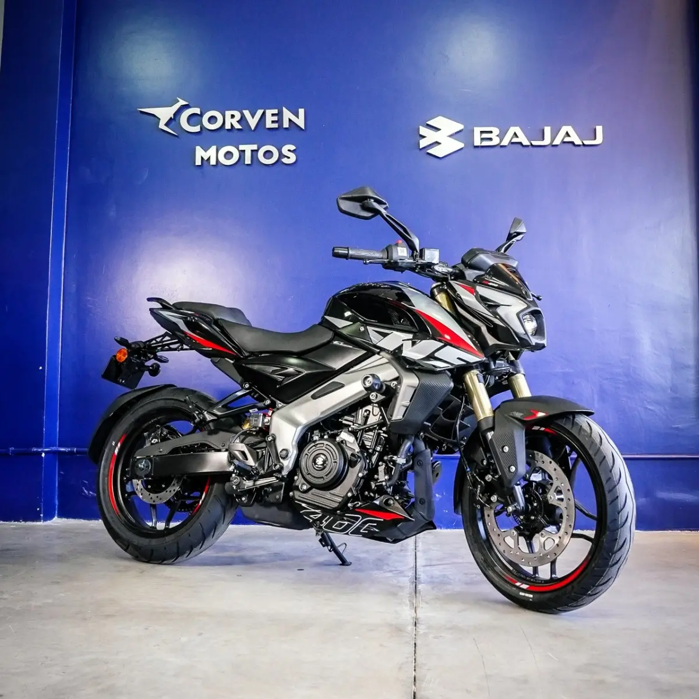

Rectificación de motores de motos en Villa Adelina
Realizamos trabajos de rectificación y reparación de motores de motocicletas en Villa Adelina y Zona Norte.
Los trabajos se realizan luego de revisar el estado del motor y determinar las tareas necesarias para su reparación.
Rectificación de tapas de cilindro
También realizamos trabajos relacionados con la rectificación y reparación de tapas de cilindro para motocicletas.
Trabajos de motor
- Rectificación de motores
- Rectificación de tapas de cilindro
- Revisión de motores
- Reparación de motores
- Diagnóstico de fallas
- Mantenimiento y puesta a punto
Consulta por rectificación
Comunicate por WhatsApp indicando el modelo de la moto y el problema que presenta para consultar por el trabajo.





Ubicación
Pedernera 1824, Villa Adelina, Buenos Aires.
Atención a clientes de Villa Adelina, San Isidro, Martínez, Olivos, Vicente López y Zona Norte.